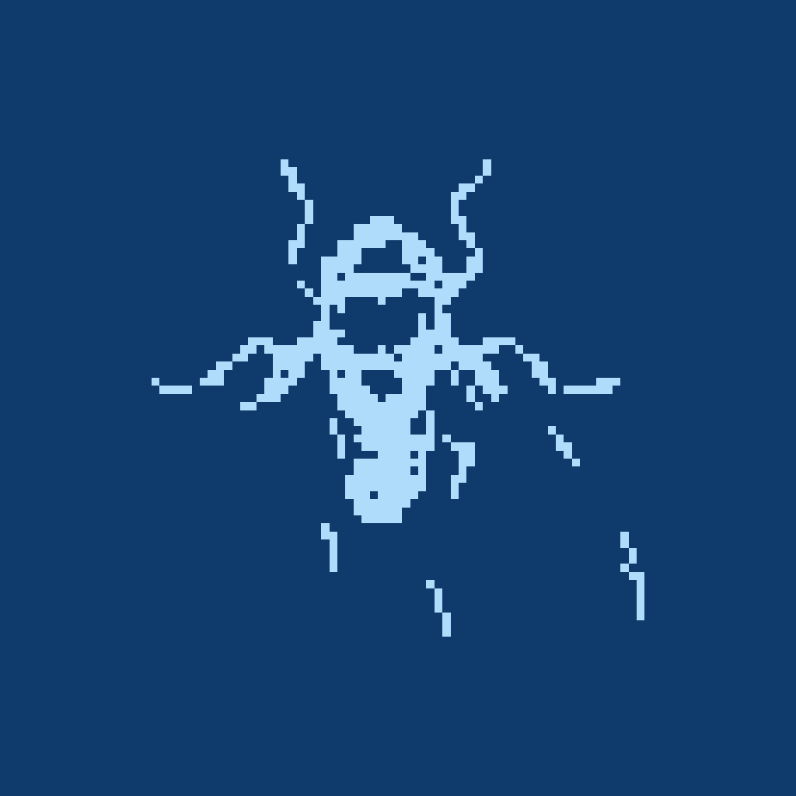

Fundamentos do design
Logo, cores, tipografia e medidas do app mobile. É a base geral: serve para qualquer tela e fica igual no iOS e no Android. O que muda por plataforma (abas, barras, botões) está em componentes. As regras de trabalho estão em mobile/REGRAS.md.
Logo
A marca é um inseto em pixel art. O arquivo original tinha ruído e pixels soltos, então refizemos em vetor a partir da grade de pixels. A cor muda conforme o fundo, e o desenho não.
Ícone do app

iOS, cantos do sistemaTamanhos e área de proteção
Evite
Cores
Um azul de ação, neutros frios e três cores de estado. A rampa de marca parte da cor original da logo (#B0DCFC) e chega ao azul marinho. Cada cor mostra a taxa de contraste: 4,5 ou mais para texto comum, 3 ou mais para texto grande e elementos de interface.
Marca
Neutros
Papéis: claro e escuro
O app nunca usa a cor "crua". Usa o papel (fundo, superfície, texto, ação), e cada papel tem valor no claro e no escuro.
Claro
Escuro
Risco e estado
O risco usa verde, âmbar e vermelho, e sempre vem com rótulo em texto: uma pessoa que não distingue as cores precisa ler o mesmo que as outras.
Tipografia
O app usa a fonte do sistema: SF Pro no iOS e Roboto no Android. É isso que faz o texto parecer nativo e respeitar o tamanho de texto que a pessoa escolheu no aparelho. A identidade vem da cor, da logo e do tom, não de uma fonte própria.
| Papel | iOS (SF Pro) | Android (Material 3) |
|---|---|---|
| Título da tela | RelatosLarge Title, 34, negrito | RelatosHeadline Medium, 28 |
| Título de seção | Risco por regiãoTitle 2, 22 | Risco por regiãoTitle Large, 22 |
| Título do cartão | Celular, Bela VistaHeadline, 17, seminegrito | Celular, Bela VistaTitle Medium, 16, médio |
| Texto | Levaram meu celular no ponto de ônibusBody, 17 | Levaram meu celular no ponto de ônibusBody Large, 16 |
| Texto secundário | Ontem, 21h35, noiteSubheadline, 15 | Ontem, 21h35, noiteBody Medium, 14 |
| Legenda | Local aproximadoFootnote, 13 | Local aproximadoLabel Medium, 12 |
Regras: títulos em frase (só a primeira letra maiúscula), nada em caixa alta e nenhum texto abaixo de 12. O texto cresce com a configuração do aparelho (até 200%), e a tela precisa continuar usável nesse tamanho.
Medidas
Espaçamento (grade de 4)
Raios
Alvo de toque
O ícone pode ser menor que o alvo, mas a área que responde ao toque não. Entre dois alvos, pelo menos 8 de distância.
Referências
Fonte: awesome-design-md. Os arquivos são de sites, então usamos como referência de tom, cor e tipografia, e não como componente nativo. Lemos de fato os resumos de Apple e Uber. Do Airbnb só havia a descrição geral, e Wise, Revolut e Spotify ainda não foram lidos.
Apple
Interface quase invisível, uma única cor de ação (azul), texto de corpo em 17 e títulos com espaçamento de letras levemente apertado.
- Levamos: uma só cor interativa, estado pressionado com leve redução de escala, sombra só em quem flutua, vidro só em barras.
- Não levamos: o ritmo de "telas de produto" de largura total, que é de site.
Uber
Uma ação principal por tela, títulos em frase, cartões planos (sem sombra) com raio de 16 e ilustração editorial.
- Levamos: um botão principal por tela, cartões planos, títulos em frase, clareza em mapa com folha.
- Não levamos: preto como cor de marca e botão em pílula em tudo, porque no iOS e no Android o formato vem do sistema.
Airbnb
Só a descrição geral: acento coral, muita fotografia, cantos arredondados.
- Levamos: a ideia de filtros em chips e cartões com respiro.
- Sem fotos no nosso caso (dados anônimos), então a cor e a hierarquia carregam a tela.
Documentação nativa
- expo-glass-effect: vidro do iOS 26. A documentação diz que só funciona no iOS 26 ou mais novo e cai para uma
Viewcomum nos outros casos. Checar a disponibilidade antes de usar. - @expo/ui, Jetpack Compose: componentes Material 3 no Android (botão, chip, campo, barra de navegação, entre outros).
- Guias da comunidade divergem sobre o uso no Expo Go. Testar no Expo Go de verdade antes de adotar, como diz o
REGRAS.md.